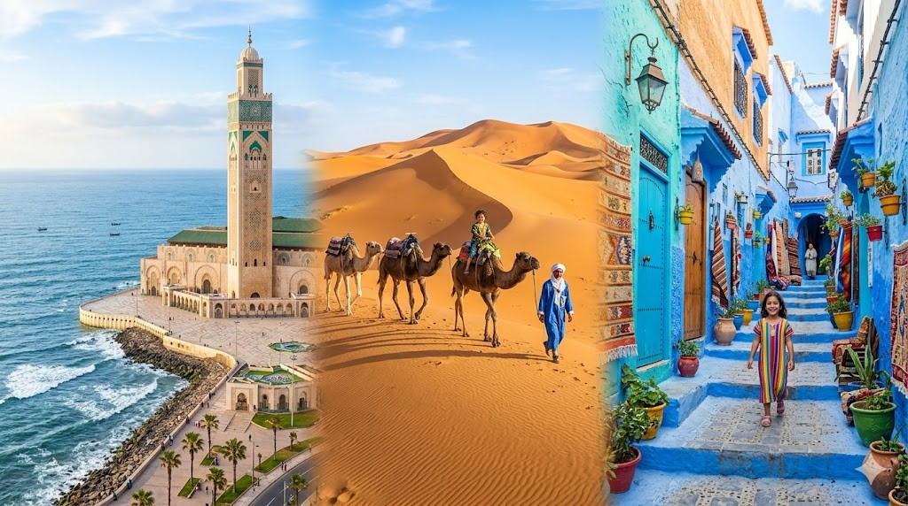
Hier stehen die wichtigsten Daten zu deinem Land. In der App baust du daraus deinen eigenen Steckbrief.
| Hauptstadt | Rabat |
| Kontinent | Afrika |
| Sprache | Arabisch und Berbersprachen (Tamazight) |
| Währung | Dirham |
| Einwohner | rund 38 Millionen Menschen |
| Fläche | etwa 447.000 km², ungefähr so groß wie Deutschland und Frankreich zusammen |
| Nachbarländer | Algerien und Westsahara |
In Marokko gibt es viele besondere Orte. Diese vier solltest du kennen.
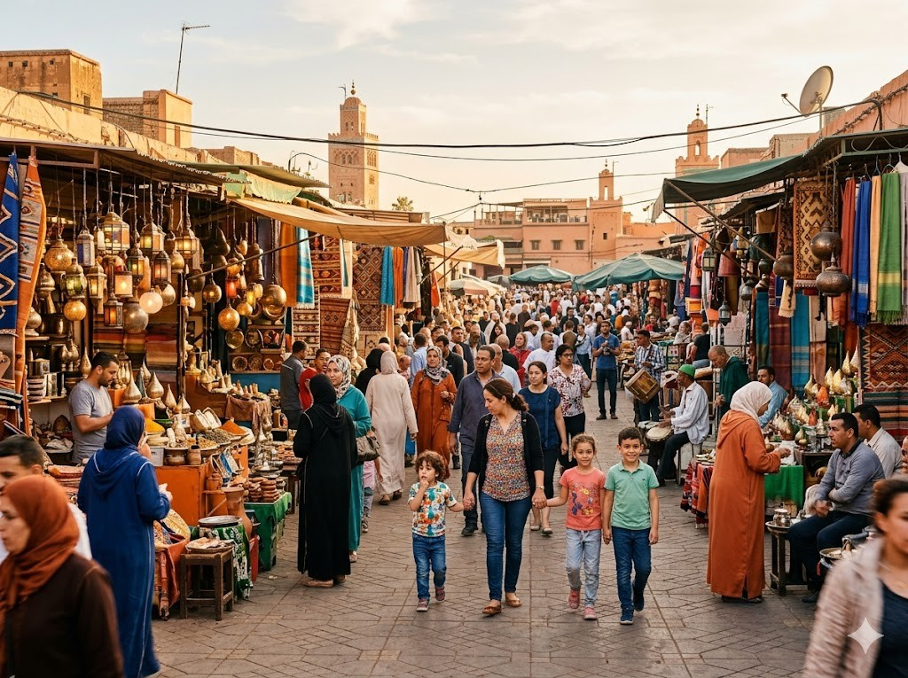
Djemaa el-FnaDer Djemaa el-Fna ist ein riesiger Platz mitten in Marrakesch. Hier treten Schlangenbeschwörer auf und Musiker spielen Straßenmusik. Händler verkaufen Gewürze, Säfte und süße Leckereien. Abends ist der Platz besonders laut und bunt.
Grüne Wörter für die Appgroßer PlatzSchlangenbeschwörerin MarrakeschStraßenmusikHändler
ChefchaouenChefchaouen ist die Blaue Stadt im Norden Marokkos. Fast alle Häuser und Gassen sind in verschiedenen Blautönen gestrichen. Die Stadt liegt in den Bergen und sieht aus wie ein blaues Meer aus Gebäuden. Touristen aus aller Welt kommen, um sie zu fotografieren.
Grüne Wörter für die AppBlaue Stadtin den Bergenblau gestrichenim Nordenenge Gassen
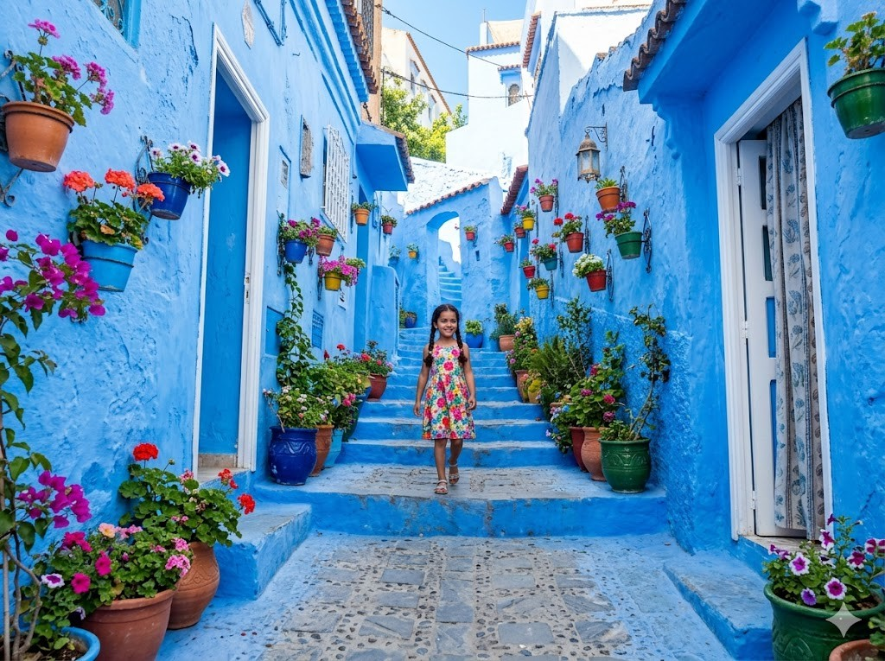
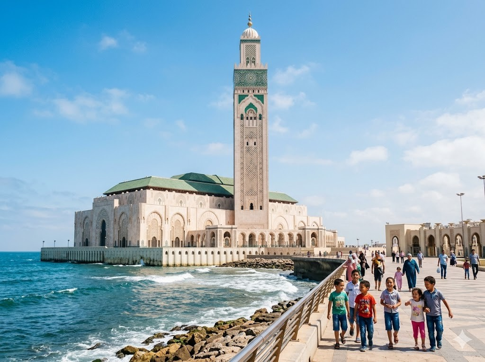
Hassan-II.-MoscheeDie Hassan-II.-Moschee steht in Casablanca direkt am Meer. Sie ist eine der größten Moscheen der Welt und hat ein sehr hohes Minarett. Das ist der Turm, von dem aus früher zum Gebet gerufen wurde. Ein Teil des Bodens ist aus Glas, sodass man das Wasser darunter sehen kann.
Grüne Wörter für die Appin Casablancaam Meersehr großhohes MinarettMoschee
Atlas-GebirgeDas Atlas-Gebirge ist eine große Bergkette, die durch Marokko zieht. Die höchsten Gipfel sind mit Schnee bedeckt. In den Bergen leben viele Berberdörfer, wo die Menschen eine eigene Sprache und Tradition haben. Im Winter kann man hier sogar Ski fahren.
Grüne Wörter für die Apphohe BergeSchneeBerberdörferwandernAtlas
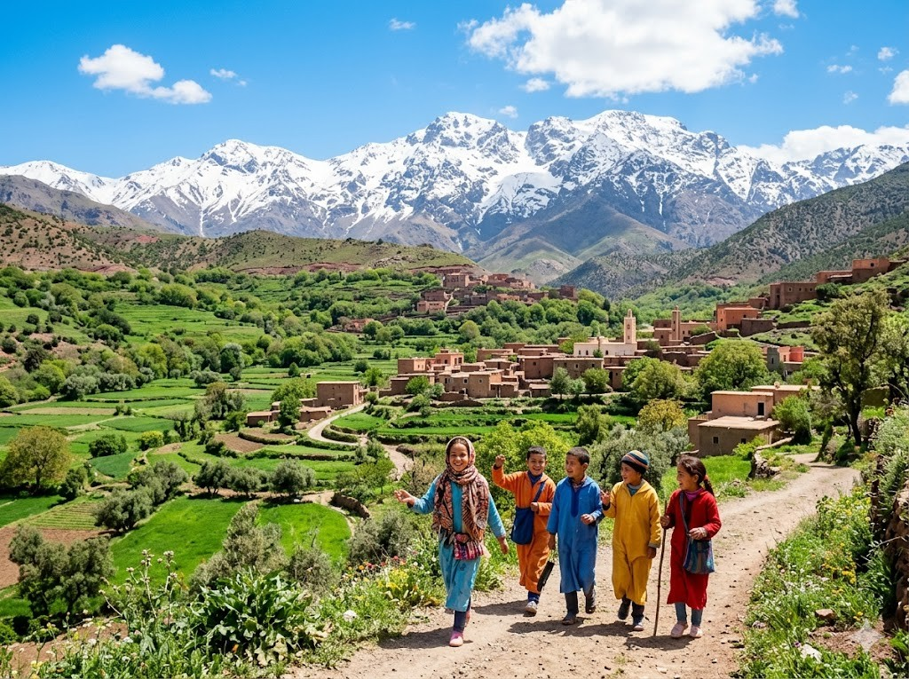
Diese Tiere leben in Marokko und sind ganz besonders.
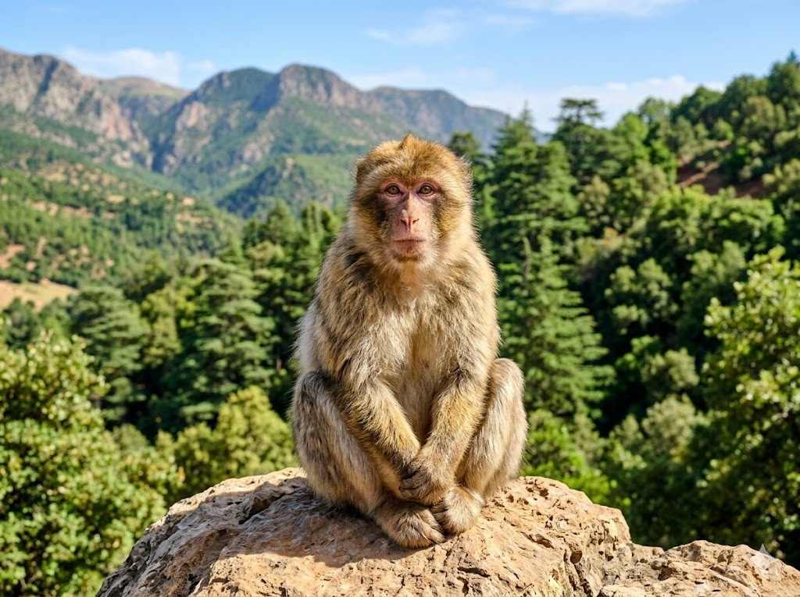
BerberaffeDer Berberaffe lebt im Atlas-Gebirge und ist der einzige wilde Affe in Afrika nördlich der Sahara. Er hat braunes Fell und lebt in großen Gruppen. Er klettert gut in Bäumen und frisst Früchte, Blätter und Insekten. Manchmal kommt er auch in die Nähe von Dörfern.
Grüne Wörter für die Appim Atlaswilder Affebraunes Fellklettertin Gruppen
DromedarDas Dromedar hat einen einzigen Höcker auf dem Rücken. Es ist ein echtes Wüstentier und kann viele Tage ohne Wasser auskommen. In seinem Höcker speichert es Fett, keine Wasservorräte, wie viele denken. Es trägt schwere Lasten durch die Wüste und hat sandfarben-braunes Fell.
Grüne Wörter für die Appeine HöckerWüstentierträgt Lastensandfarbenohne Wasser
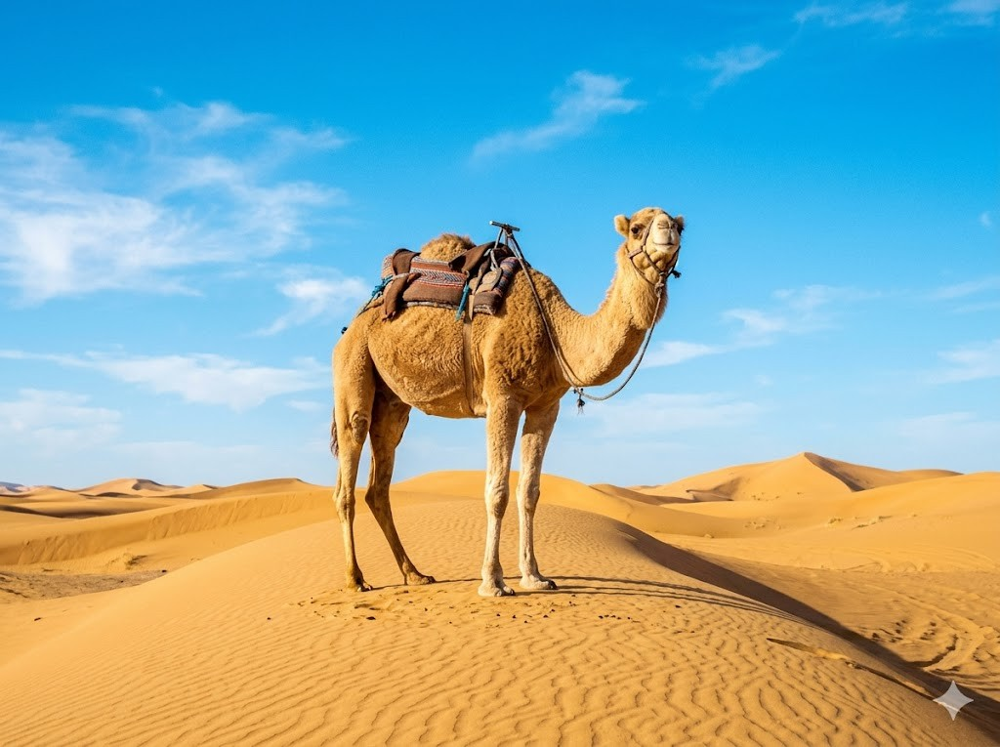
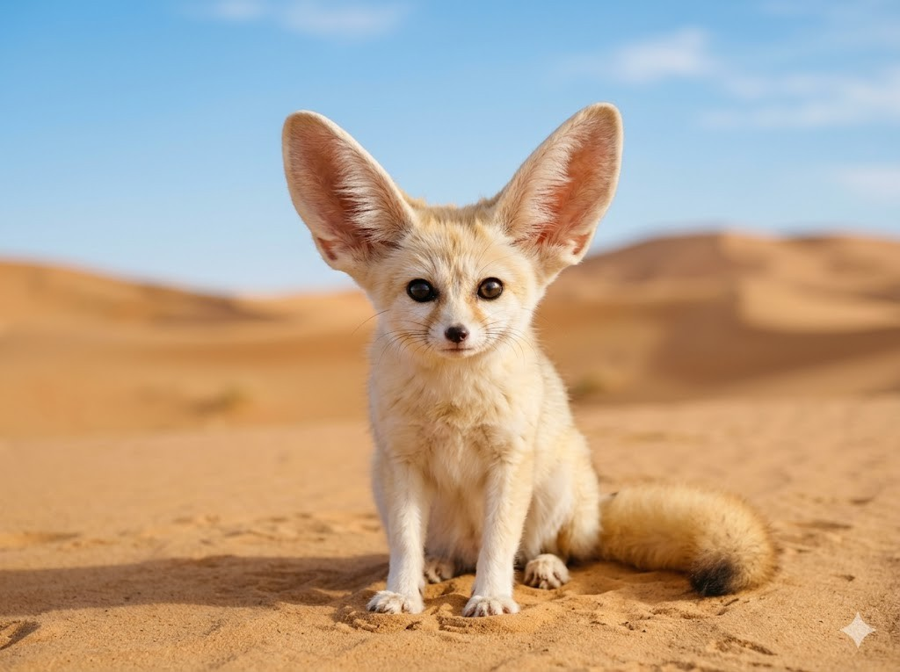
FennekDer Fennek ist ein kleiner Wüstenfuchs mit sehr großen Ohren. Er lebt in der Sahara und ist nachtaktiv, das bedeutet, er schläft tagsüber und sucht nachts nach Futter. Sein sandfarbenes Fell hilft ihm, sich in der Wüste zu verstecken. Mit seinen riesigen Ohren kann er sehr gut hören.
Grüne Wörter für die Appkleiner Fuchsgroße Ohrensandfarbenin der Wüstenachtaktiv
In der App kannst du beim Essen das Foto nehmen oder dein Gericht selbst malen.
TajineDie Tajine ist ein Eintopf, der in einem spitzen Tongefäß gekocht wird. Darin schmort Lamm oder Hähnchen zusammen mit Gemüse und vielen Gewürzen wie Zimt und Kreuzkümmel. Das Gericht wird sehr langsam gegart, damit alles weich und würzig wird.
Grüne Wörter für die Appspitzes TongefäßLamm oder HähnchenGewürzelangsam gegartNationalgericht
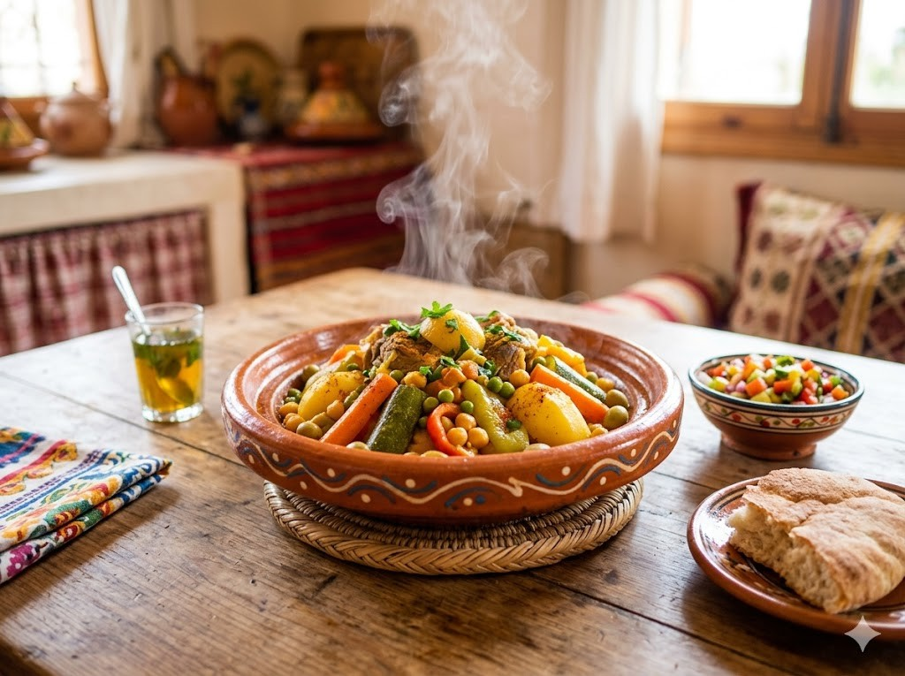
CouscousCouscous besteht aus kleinen Grießkügelchen, die gedämpft werden. Man isst ihn mit Gemüse und Fleisch zusammen in einer würzigen Brühe. In Marokko gilt Couscous als Nationalgericht und wird vor allem freitags gegessen, weil Freitag der wichtigste Wochentag im Islam ist.
Grüne Wörter für die Appkleine Grießkügelchenmit GemüseNationalgerichtfreitagsmit Fleisch
MinzteeMarokkanischer Minztee ist ein heißer Grüntee mit frischer Minze und sehr viel Zucker. Beim Einschenken hält man die Teekanne hoch, damit der Tee aus großer Höhe in das Glas fließt. Das macht den Tee schaumig. Den Tee zu teilen ist ein Zeichen von Gastfreundschaft.
Grüne Wörter für die Appheißer Grünteefrische Minzeviel Zuckeraus der HöheGastfreundschaft
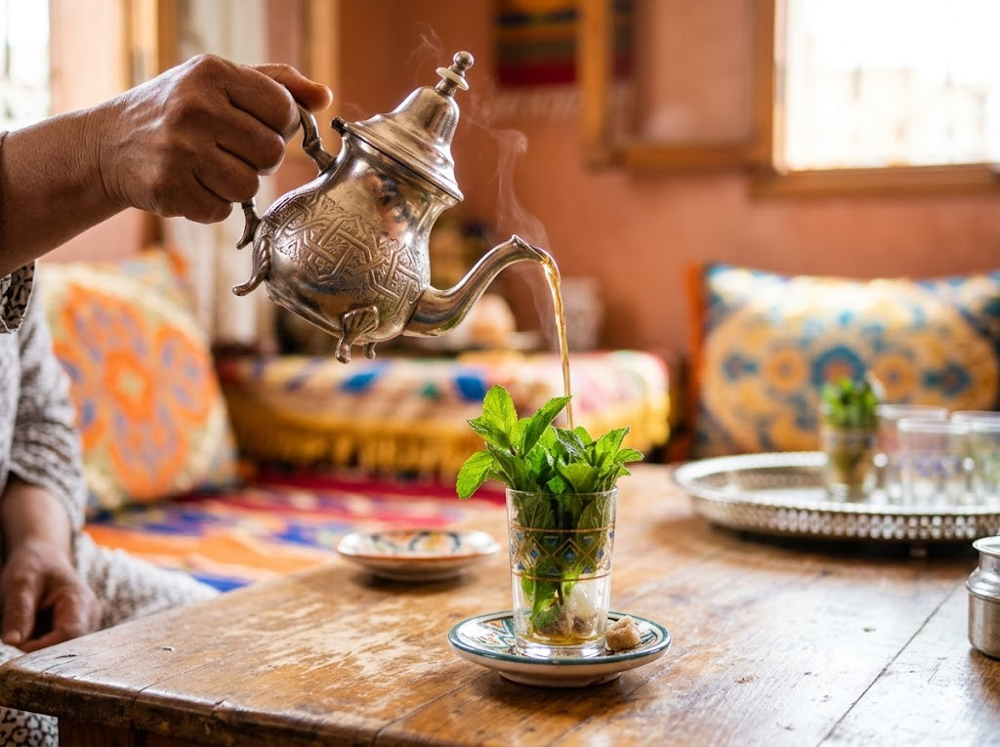
⚽ Gut zu wissen
Die Fußball-Nationalmannschaft von Marokko heißt auf Arabisch „Atlas-Löwen". Sie spielt in roten Trikots und ist bei der WM 2026 dabei. Marokko ist das erste afrikanische Land, das bei einer Weltmeisterschaft ins Halbfinale gekommen ist, bei der WM 2022 in Katar. Das war ein besonderer Moment für ganz Afrika.
Grüne Wörter für die AppAtlas-Löwenrote Trikotsbei der WM 2026erstes HalbfinaleAfrika
🌟 Profi-Wissen
Bei der WM 2022 war Marokko die große Überraschung. Das Team aus Afrika erreichte das Halbfinale und besiegte dabei Spanien und Portugal. Das hatte noch nie ein afrikanisches Team geschafft. Achraf Hakimi ist Marokkos Star. Er spielt bei Paris Saint-Germain.
Grüne Wörter für die AppAchraf HakimiParis Saint-GermainWM 2022 HalbfinaleSpanien und Portugal besiegtAfrika-Sensation
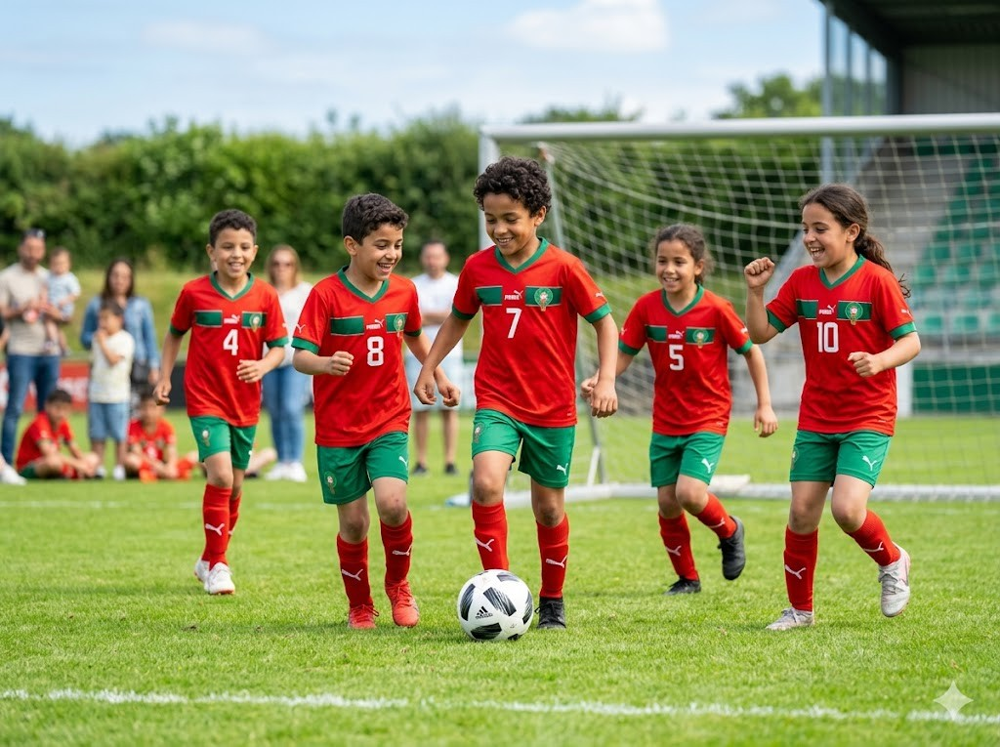
Schule in MarokkoIn Marokko lernen die Kinder in der Grundschule hauptsächlich auf Arabisch. Viele tragen eine Schuluniform. Die Mittagspause ist oft lang, sodass manche Kinder nach Hause essen gehen. Nachmittags gibt es Hausaufgaben. Neben Arabisch lernen die Kinder auch Französisch.
Grüne Wörter für die Appauf ArabischSchuluniformlange MittagspauseHausaufgabenGrundschule
Souk und FamilieEin Souk ist ein traditioneller Markt mit engen Gassen. Dort findet man bunte Stoffe, Gewürze, Leder und Tonwaren. Familien gehen zusammen einkaufen, es ist lebhaft und laut. Kinder helfen beim Tragen und kennen oft schon viele Händler. Es duftet nach Gewürzen und frischem Brot.
Grüne Wörter für die Appenge Gassenbunte StoffeGewürzegemeinsam einkaufenlebhaft
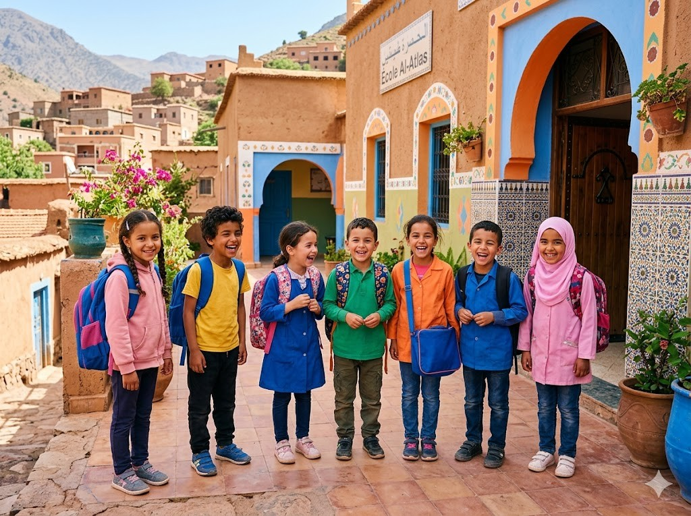